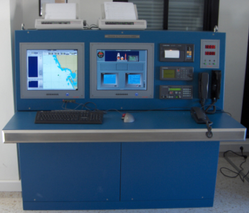
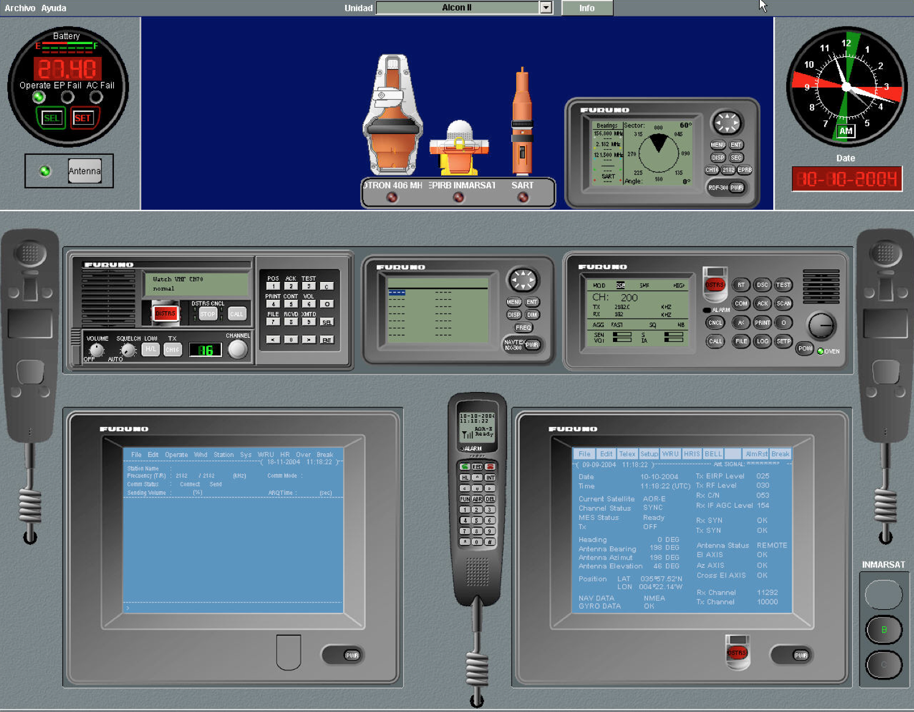

Configuración
El Simulador GMDSS está compuesto por varios puestos, conectados entre sí mediante una red local. Todos los puestos son idénticos en cuanto a la funcionalidad disponible en cada uno de ellos.
El simulador ofrece la posibilidad de elegir puestos con equipos de comunicación reales o con todos los equipos de comunicación simulados en pantalla.
El Puesto con equipos de comunicación reales consta de una consola de diseño ergonómico en la que se instalan los siguientes equipos:

El puesto sin equipos de comunicación reales consta de una consola de diseño ergonómico en la que se instalan los siguientes equipos:
Todos los equipos de comunicaciones se simulan en pantalla utilizando miméticos de equipos reales.

Todos los puestos del Simulador GMDSS pueden ser configurados como puestos de instructor o de alumno. La diferencia entre ambos tipos de puestos es operativa. Los puestos de instructor disponen de toda la funcionalidad del alumno más funcionalidad específica para preparación, ejecución y análisis de ejercicios.
Puesto del Instructor:
La misión del puesto del instructor comprende tres cometidos básicos:
En primer lugar permite ejercer el control global del sistema, lo que implica, además de su puesta en marcha y parada, la comprobación continua de que todos los elementos constitutivos (hardware y software) funcionan correctamente. Las anomalías significativas que se presenten durante su operación se comunican al instructor inmediatamente.
En segundo lugar permite la supervisión de los alumnos que consiste, básicamente, en:
Por último, el puesto de instructor es una estación más de comunicaciones, y como tal toma parte activa en el ejercicio que se esté llevando a cabo; bajo este aspecto, el puesto del instructor posee además determinadas funciones exclusivas, propias de las estaciones costeras de comunicaciones y en general de aquellos centros situados en tierra (Centros de Coordinación de Salvamento, abonados terrestres, centros que originan mensajes a los navegantes, emisoras Navtex y costeras Inmarsat).
Puesto del Alumno
La misión del puesto del alumno es, básicamente, proporcionar a éste todos los medios de comunicaciones propios de una estación de buque equipada para satisfacer los requerimientos del sistema GMDSS para las áreas A1, A2, A3 y A4.